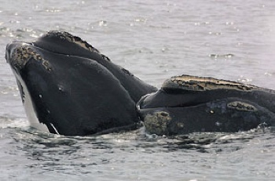

Choose a Whale:
Beaked Whale
Beaked whales are the members of the family Ziphiidae which consists of 21 species. These toothed whales are notable for their elongated beaks. Beaked whales are one of the world's most extreme divers.
- Wikipedia
Beluga Whale
The beluga, or white whale, Delphinapterus leucas, is an Arctic and sub-Arctic cetacean. It is one of two members of the family Monodontidae, along with the narwhal, and the only member of the genus Delphinapterus. This marine mammal is commonly referred to simply as the beluga or sea canary due to its high-pitched twitter. Using the term "white whale" to refer to belugas is, in the strictest sense, erroneous, as the term "whale" is usually applied to the Mysticeti (baleen whales) and not to toothed cetaceans which belong to the suborder Odontoceti, which also includes dolphins and porpoises.
- Wikipedia
Blue Whale
The blue whale (Balaenoptera musculus) is a marine mammal belonging to the suborder of baleen whales (called Mysticeti). At 30 metres (98 ft) in length and 180 metric tons (200 short tons) or more in weight, it is the largest known animal to have ever existed.
- Wikipedia
Bowhead Whale
The bowhead whale (Balaena mysticetus) is a baleen whale of the right whale family Balaenidae, in suborder Mysticeti and genus Balaena. A stocky dark-colored whale without a dorsal fin, it can grow to 20 m (66 ft) in length. This thick-bodied species can weigh 75 tonnes (74 long tons; 83 short tons) to 100 tonnes (98 long tons; 110 short tons), second only to the blue whale, although the bowhead's maximum length is less than several other whales. It lives entirely in fertile Arctic and sub-Arctic waters, unlike other whales that migrate to feed or reproduce to low latitude waters. It was also known as Greenland right whale or Arctic whale. The bowhead has the largest mouth of any animal.
- Wikipedia

Fin Whale
The fin whale (Balaenoptera physalus), also called the finback whale, razorback, or common rorqual, is a marine mammal belonging to the suborder of baleen whales. It is the second longest animal in the world and second largest rorqual after the blue whale, growing to 27.3 metres (89.5 ft) long and weighing nearly 74 tonnes (73 long tons; 82 short tons). The American naturalist Roy Chapman Andrews called the fin whale "the greyhound of the sea... for its beautiful, slender body is built like a racing yacht and the animal can surpass the speed of the fastest ocean steamship."
- Wikipedia
Humpback Whale
The humpback whale (Megaptera novaeangliae) is a species of baleen whale. One of the larger rorqual species, adults range in length from 12–16 metres (39–52 ft) and weigh approximately 36,000 kilograms (79,000 lb). The humpback has a distinctive body shape, with unusually long pectoral fins and a knobbly head. An acrobatic animal known for breaching and slapping the water with its tail and pectorals, it is popular with whale watchers off Australia, New Zealand, South America, Canada, and the United States.
- Wikipedia
Killer Whale
The killer whale (Orcinus orca), also referred to as the orca whale or orca, and less commonly as the blackfish, is a toothed whale belonging to the oceanic dolphin family. Killer whales are found in all oceans, from the frigid Arctic and Antarctic regions to tropical seas. Killer whales as a species have a diverse diet, although individual populations often specialize in particular types of prey. Some feed exclusively on fish, while others hunt marine mammals such as sea lions, seals, walruses, and even large whales. Killer whales are regarded as apex predators, lacking natural predators.
- Wikipedia
Narwhal
The narwhal, or narwhale, Monodon monoceros, is a medium-sized toothed whale that lives year-round in the Arctic. One of two living species of whale in the Monodontidae family, along with the beluga whale, narwhal males are distinguished by a long, straight, helical tusk, actually an elongated upper left canine. Found primarily in Canadian Arctic and Greenlandic waters, rarely south of 65°N latitude, the narwhal is a uniquely specialized Arctic predator. In the winter, it feeds on benthic prey, mostly flatfish, at depths of up to 1500 m under dense pack ice.
- Wikipedia

Right Whale
Right whales are three species of large baleen whales of the genus Eubalaena. They consist of three species; the North Atlantic right whale (E. glacialis), the North Pacific right whale (E. japonica) and the southern right whale (E. australis). Right whales have rotund bodies with arching rostrums, V-shaped blowholes and dark gray or black skin. The most distinguishing feature of a right whale is the rough patches of skin (callosities) on its head which appear white due to parasitism by whale lice. Right whales can grow up to 18 m (59 ft) long and weigh up to 100 short tons (91 t; 89 long tons), significantly larger than humpbacks or grays, but smaller than blues.
- Wikipedia
Sperm Whale
The sperm whale (Physeter macrocephalus) is a large toothed whale (odontocete) belonging to the order Cetacea. It is the only living member of genus Physeter, and one of three extant species in the sperm whale family, along with the pygmy sperm whale and dwarf sperm whale of the genus Kogia. A marine mammal, it possesses the largest brain of any animal. Its name derives from a milky-white waxy substance, spermaceti, found in its enormous head.
- Wikipedia